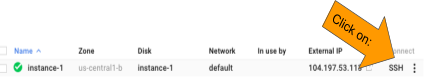

Compute Engine インスタンスの作成
概要
このラボでは、仮想マシンを起動してセキュリティを構成し、リモートでアクセスします。
学習内容
このラボの内容:
はじめに
このラボでは、仮想マシンを起動して API アクセスを構成し、リモートでログインします。このような低レベルで Compute Engine インスタンスを操作するケースは少ないと思われますが、GCP の基礎がわかっていれば、トラブルシューティング時に役に立つ可能性があります。
タスク 1: 必要な API アクセスを備えた Compute Engine インスタンスを作成する
Compute Engine のインスタンスを作成するには:
-
GCP Console の[ナビゲーション メニュー]（ ）で、[Compute Engine] をクリックします。
）で、[Compute Engine] をクリックします。
-
[作成] をクリックして、フォームが読み込まれるまで待機します。表示されたフォーム上のオプションの一部を変更する必要があります。
-
[名前] はデフォルト値のままにし、[リージョン] で us-central1、[ゾーン] で us-central1-a を選択します。
-
[ID と API へのアクセス] の [アクセス スコープ] で、[すべての Cloud API に完全アクセス権を許可] を選択します。

-
[作成] をクリックします。
タスク 2: インスタンスに SSH 接続する
インスタンスが作成されたら、リモートで Secure Shell（SSH）を使用して Compute Engine インスタンスにアクセスできます。
-
作成したインスタンスが利用可能になったら、[SSH] をクリックします。

注: SSH キーは自動的に転送されるため、ブラウザから直接 SSH 接続することができ、追加のソフトウェアを必要としません。
-
起動した Compute Engine インスタンスに関する情報を表示するには、SSH ターミナルで次のコマンドを入力します。
cat /proc/cpuinfo
タスク 3: ソフトウェアをインストールする
-
SSH ターミナルで、次のコマンドを入力します。
sudo apt-get update
sudo apt-get -y -qq install git
-
Git がインストールされたことを確認します。
git --version
-
次のコマンドを入力して SSH セッションを終了します。
exit
マニュアルの最終更新日: 2018 年 10 月 8 日
ラボの最終テスト日: 2018 年 10 月 8 日